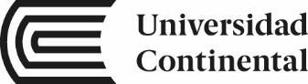

Estrés académico
Las demandas académicas frente a los recursos que percibimos para afrontarlas.
LeveModeradoSevero
Inventario SISCO SV-21
ENFOQUEEQUIPO 01Cuando el estrés académico cambia,
¿qué pasa con nuestra atención?
Exploramos las diferencias en atención selectiva y concentración en estudiantes de Ingeniería de Sistemas e Informática.

Diferencias en la atención selectiva y concentración según el nivel de estrés académico en estudiantes de Ingeniería de Sistemas e Informática de la Universidad Continental – Huancayo, durante el periodo 2026-20.
↘¿Existen diferencias en la atención selectiva y concentración según el nivel de estrés académico?
En estudiantes de Ingeniería de Sistemas e Informática de la Universidad Continental, campus Huancayo, durante el periodo 2026-20.
Las demandas académicas frente a los recursos que percibimos para afrontarlas.
Seleccionar información relevante y filtrar los distractores durante una tarea.
Mantener la precisión en una tarea de selección bajo presión de tiempo.
TR: elementos procesados · O: omisiones · C: comisiones · TA: aciertos.
Tres perspectivas para entender por qué las demandas académicas, la selección de información y la precisión pueden relacionarse.
Diez antecedentes. Tres ámbitos.
Una relación que merece estudiarse con más detalle: el efecto del estrés sobre la atención no es uniforme.
reportó estrés académico durante el semestre.
1 801 estudiantes · 9 universidades ↗ECUADOR · RIVERA FLORES ET AL., 202556%obtuvo una concentración baja en el Test d2.
305 estudiantes universitarios ↗HUANCAYO · MONTOYA-DIAZ ET AL., 202657,2%presentó estrés académico moderado.
250 estudiantes de Psicología · UC ↗Cifras de antecedentes recogidos en el documento del equipo. Corresponden a poblaciones distintas; no son resultados de nuestra muestra.
Montoya-Diaz et al. (2026) · 250 estudiantes de Psicología de la Universidad Continental.
Distribución del antecedente, no de la muestra del Equipo 1.
Cargando los antecedentes…
Qi et al. (2024) observaron una mejora del control atencional en su grupo con estrés académico crónico. Lin et al. (2020) muestran que el control percibido modera el efecto. Por eso, nuestra hipótesis es no direccional: esperamos diferencias, sin anticipar qué grupo rendirá mejor.
Enfoque cuantitativo · Investigación básica
Diseño no experimental, transversal y causal-comparativo (ex post facto).
SISCO SV-21 para describir el estrés y formar los tres grupos naturales.
Test d2 para medir atención selectiva (TOT) y concentración (CON).
Contrastar TOT y CON, por separado, entre los niveles de estrés.
Puntaje global porcentual de estrés, según la operacionalización propuesta en el documento.
Referencia de cálculo: 53 por grupo; ANOVA de un factor, α = .05, potencia = .80 y f = 0,25.
Muestreo probabilístico estratificado por ciclo. El tamaño de la población debe confirmarse con la EAP; los grupos naturales pueden tener tamaños diferentes.
ANOVA de un factor para TOT y para CON; comparaciones post hoc de Tukey o Games-Howell, según corresponda.
Kruskal-Wallis y comparaciones de Dunn-Bonferroni. Se reportará el tamaño del efecto: η² o ε², según el análisis.
Describir y comparar grupos en un momento específico. Las diferencias observadas no demostrarían causalidad directa. Hipótesis nula: no existen diferencias entre los niveles de estrés.
Elige dos antecedentes y compara sus instrumentos, diseño y participantes.
Explora los diez antecedentes de la tabla 7.
| Antecedente | Enfoque y tipo | Alcance y diseño | Muestra | Detalle |
|---|
Combinar SISCO SV-21 y Test d2 para estudiar nuestra propia realidad: estudiantes de Ingeniería de Sistemas e Informática en Huancayo.
Estudiantes de Ingeniería de Sistemas e Informática.
Universidad Continental · Huancayo
Investigación Académica · NRC 44779 y 44762
Planificación del trabajo, integración del documento y sistematización de los antecedentes 1 y 2.
Registro de acuerdos y bitácora; búsqueda de los antecedentes 3 y 4 sobre estrés y atención.
Sistematización de los antecedentes 5 y 6 sobre baremos del Test d2 y concentración en universitarios.
Antecedentes nacionales 7 y 8, gestión de la biblioteca en Zotero y revisión de referencias en APA 7.
Antecedentes 9 y 10; declaración de uso de IA y medidas de protección de la información.
Teorías de las variables, síntesis del marco teórico y diseño del producto digital del proyecto.
Roles y responsabilidades consignados en el plan de trabajo del documento del equipo.
El recorrido principal desarrolla las tablas 3, 5 y 7. Amplía la lectura con el tema de investigación, el marco teórico, el método propuesto y las referencias del equipo.
Consulta los capítulos académicos del proyecto.
La síntesis visual incluida en el documento.
Contenido académico tomado del archivo del Equipo 1. La investigación está planteada como un proyecto por aplicar: las cifras mostradas corresponden a antecedentes y el plan muestral es propuesto. Las referencias se reproducen como aparecen en el documento.
4 capítulos · tema, marco teórico, método y referencias
Tabla 3
Delimitación del tema
| Elemento | Redacción del equipo |
|---|---|
| Tema delimitado (variable(s), población, lugar y periodo) | Variables: estrés académico (variable de agrupación, independiente no manipulada), atención selectiva (variable de resultado 1, medida con el índice TOT del Test d2) y concentración (variable de resultado 2, medida con el índice CON del Test d2). Población: estudiantes matriculados en Ingeniería de Sistemas e Informática de la Universidad Continental. Lugar: campus Huancayo, Junín, Perú. Periodo: semestre 2026-20. |
| Pregunta de investigación | ¿Existen diferencias en el nivel de atención selectiva y concentración (efectividad total [TOT] e índice de concentración [CON]) según el nivel de estrés académico (leve, moderado y severo) en estudiantes de Ingeniería de Sistemas e Informática de la Universidad Continental – Huancayo, durante el periodo 2026-20? |
| Objetivo general | Determinar las diferencias en el nivel de atención selectiva y concentración (TOT y CON) según el nivel de estrés académico (leve, moderado y severo) en estudiantes de Ingeniería de Sistemas e Informática de la Universidad Continental – Huancayo, durante el periodo 2026-20. |
| Objetivo específico 1 | Identificar el nivel de estrés académico (leve, moderado y severo) en los estudiantes de Ingeniería de Sistemas e Informática de la Universidad Continental – Huancayo, durante el periodo 2026-20, mediante el Inventario SISCO SV-21 (Olivas-Ugarte et al., 2021; Montoya-Diaz et al., 2026). |
| Objetivo específico 2 | Describir la atención selectiva, mediante la efectividad total (TOT), y la concentración, mediante el índice de concentración (CON), según los baremos centiles del Test de Atención d2 (Pawlowski, 2020, 2024), en los estudiantes de Ingeniería de Sistemas e Informática de la Universidad Continental – Huancayo, durante el periodo 2026-20. |
| Objetivo específico 3 | Comparar la atención selectiva (TOT) y la concentración (CON) según el nivel de estrés académico (leve, moderado y severo) en los estudiantes evaluados. |
Tabla 4
Distribución de la búsqueda de fuentes
| Integrante (Solo Nombre) | Variable u objetivo a cargo | Bases de datos o repositorios consultados | N.º de fuentes seleccionadas | Aporte a la síntesis |
|---|---|---|---|---|
| Benites | Estrés académico y atención en universitarios latinoamericanos | Dialnet, AmeliCA, SciELO | 2 | Aporta los antecedentes 1 y 2, que miden el estrés con el SISCO y la atención con pruebas objetivas: modelo directo para nuestros instrumentos. |
| Fuentes | Efecto del estrés académico sobre la atención y la concentración (estudios experimentales y neurofisiológicos) | PubMed, Scopus y ScienceDirect (Biblioteca Virtual UC) | 3 | Aporta los antecedentes 3 y 4 y un estudio de contraste: el efecto del estrés sobre la atención no es uniforme, porque depende de su duración y del control percibido. |
| Ochoa | Baremos del Test d2 y concentración en universitarios | RECIE, Redalyc, Dialnet, ConcienciaDigital, SpringerLink | 4 | Aporta los antecedentes 5 y 6 (baremos del d2 en universitarios de ingeniería y medición conjunta del estrés académico y la concentración en periodo de exámenes) y dos estudios que respaldan el uso del d2. |
| Padilla | Atención selectiva y estrés académico en universitarios peruanos | SciELO Perú, Redalyc, ALICIA (CONCYTEC) | 3 | Aporta los antecedentes 7 y 8 (revisión sistemática nacional que identifica la falta de concentración como síntoma frecuente y datos nacionales de prevalencia) y las evidencias psicométricas del SISCO SV-21 en universitarios peruanos. |
| Valdivia | Estrés académico y cognición en el ámbito nacional y local | Revistas peruanas (OJS), ALICIA, repositorio institucional de la UPCH, Biblioteca Virtual UC | 5 | Aporta los antecedentes 9 (Tarapoto) y 10 (Universidad Continental, Huancayo), dos estudios locales de apoyo y una tesis de maestría nacional que relaciona la atención selectiva con el estrés académico. |
| Veliz | Teorías e instrumentos de las tres variables (estrés académico, atención y concentración) | Biblioteca Virtual UC, Taylor & Francis, ScienceDirect, Redalyc | 7 | Aporta las fuentes teóricas e instrumentales de la Tabla 6 para cada una de las tres variables y el antecedente de diseño comparativo usado en la Sección IV. |
Distribuimos la búsqueda por variable y por ámbito para no superponer fuentes. Usamos ecuaciones como ("estrés académico" OR "academic stress") AND (atención OR "atención selectiva" OR concentración OR attention OR concentration) AND (universitarios OR estudiantes OR "college students"), y «test d2» AND universitarios, en bases de datos (Scopus, PubMed, SciELO, Redalyc, Dialnet) y en repositorios de tesis (ALICIA de CONCYTEC y repositorios institucionales). Aplicamos cinco criterios de selección: (1) publicación entre 2020 y 2026, sin excepción, incluso para las fuentes teóricas, instrumentales y metodológicas; (2) que el título mencione al menos una de nuestras variables: estrés académico, atención o concentración; (3) estudios revisados por pares con DOI o tesis con enlace persistente; (4) muestras de estudiantes, preferentemente universitarios; y (5) medición explícita de la atención o la concentración en los antecedentes. Los criterios 2 y 5 se incorporaron tras las revisiones del docente; por ello, reemplazamos las obras clásicas anteriores a 2020 (manuales de instrumentos, teorías y textos de metodología) por publicaciones recientes de sus propios autores o por estudios que las describen y aplican. La selección se hizo en dos filtros (título y resumen; luego texto completo) y cada integrante registró sus fuentes en la biblioteca compartida de Zotero antes de sintetizarlas en las Tablas 5 a 7.
Tabla 5
Matriz de antecedentes
| N.º | Lugar | Autoría y año | Objetivo general | Paradigma de investigación | Hallazgo o conclusión | Valoración crítica (pertinencia · confiabilidad · aporte) |
|---|---|---|---|---|---|---|
| 1 | Universidad Técnica de Ambato, Ambato, Ecuador | Rivera Flores et al. (2025) | "El objetivo de este estudio es determinar el nivel de estrés académico y su impacto en la atención selectiva del alumnado universitario" (Rivera Flores et al., 2025, p. 63). | Positivista (cuantitativo, correlacional). | El 36 % de los estudiantes presentó estrés severo y el 49 % moderado; en el Test d2, el 37 % obtuvo una capacidad baja de procesamiento visual y el 56 % una concentración baja, de modo que la atención selectiva disminuyó conforme aumentó el estrés (Rivera Flores et al., 2025). | Pertinencia: muy alta; es el único antecedente que combina nuestros dos instrumentos (SISCO SV y Test d2). Confiabilidad: revista indexada en SciELO, muestra probabilística (n = 305). Aporte: modelo para interpretar los índices TOT y CON y para el contraste con Tau-b de Kendall. |
| 2 | Corporación Universitaria Minuto de Dios y Universidad Pontificia Bolivariana, Antioquia, Colombia | Acosta Echavarría et al. (2025) | "El presente estudio analiza la relación entre el estrés académico, la memoria de trabajo y la atención en estudiantes universitarios de primer año" (Acosta Echavarría et al., 2025, p. 135). | Positivista (cuantitativo, correlacional). | Solo se halló relación negativa entre la susceptibilidad al estrés académico y el desempeño en la tarea de claves (atención) y en la memoria verbal; en las demás pruebas atencionales no hubo relación significativa (Acosta Echavarría et al., 2025). | Pertinencia: alta; mide la atención con pruebas neuropsicológicas objetivas. Confiabilidad: revista arbitrada, protocolo estandarizado; muestra pequeña (n = 87). Aporte: advierte que la relación puede aparecer solo en algunas medidas, lo que respalda usar dos indicadores (TOT y CON). |
| 3 | Liaoning Normal University, Dalian, China | Qi et al. (2024) | "This study aimed to investigate the effect of chronic academic stress on attentional control process" (Qi et al., 2024, p. 1). [Este estudio tuvo como objetivo investigar el efecto del estrés académico crónico sobre el proceso de control atencional.] | Positivista (cuantitativo, comparativo con medidas electrofisiológicas). | Los estudiantes que preparaban el examen nacional de posgrado (grupo con estrés académico crónico) mostraron un menor efecto de interferencia en la tarea Flanker que el grupo control y cambios en los componentes N2 y P3, lo que los autores interpretan como una mejora del control atencional (Qi et al., 2024). | Pertinencia: muy alta; estudia estrés académico sostenido (no inducido en laboratorio) y lo relaciona con la atención selectiva. Confiabilidad: International Journal of Clinical and Health Psychology (Elsevier), indexada en Scopus y PubMed; grupos naturales con control de cortisol; muestra pequeña (n = 55). Aporte: contraste clave: el estrés académico crónico no siempre perjudica la atención, por lo que nuestra hipótesis se plantea de forma no direccional. |
| 4 | Instituto de Psicología de la Academia China de Ciencias, Beijing, China | Lin et al. (2020) | "In this study, we addressed the moderating effects of perceived control between academic stress and working memory" (Lin et al., 2020, p. 256). [Abordamos el efecto moderador del control percibido entre el estrés académico y la memoria de trabajo.] | Positivista (correlacional con medidas neurofisiológicas). | En los estudiantes con bajo control percibido, a mayor estrés académico fue menor la amplitud del componente P2 en la tarea 3-back, lo que indica un deterioro del proceso atencional; en quienes tenían control alto o moderado no se observó ese efecto (Lin et al., 2020). | Pertinencia: alta; estudia estrés académico real, no estrés de laboratorio. Confiabilidad: revista Stress (Taylor & Francis), indexada en PubMed. Aporte: muestra que el efecto del estrés académico sobre la atención no es uniforme, lo que justifica comparar por separado los tres niveles de estrés. |
| 5 | Universidad de Costa Rica y Universidad de Iberoamérica, San José, Costa Rica | Pawlowski (2024) | "el objetivo de este estudio es evaluar la influencia de los factores sociodemográficos, como la edad y el sexo, en la atención sostenida de personas universitarias" (Pawlowski, 2024, p. 25). | Positivista (cuantitativo, descriptivo-correlacional). | En el modelo multivariado, la carrera fue el único factor con efecto significativo sobre los puntajes TR y CON del Test d2, mientras que la edad y el sexo no lo tuvieron; los estudiantes de ciencias básicas e ingenierías obtuvieron puntajes más altos que los de psicología (Pawlowski, 2024). | Pertinencia: muy alta; ofrece baremos del Test d2 para universitarios hispanohablantes, incluidos los de ingeniería. Confiabilidad: revista RECIE con DOI; muestra amplia (n = 459) y análisis MANCOVA. Aporte: aporta los centiles para describir TOT y CON y advierte que la carrera influye en los puntajes, por lo que usaremos los baremos de universitarios de ingeniería. |
| 6 | Instituto Tecnológico Superior de Libres, Puebla, México | Lobato Báez et al. (2021) | "Identificar el nivel de estrés académico mediante el instrumento de medición SISCO y el nivel de concentración de los estudiantes" (Lobato Báez et al., 2021, p. 207). | Positivista (inferido: cuantitativo, correlacional-explicativo). | El 24 % de los estudiantes refirió estrés casi siempre o siempre y el 35 % algunas veces; en el registro electroencefalográfico posterior a la semana de exámenes, solo el 34 % mostró concentración activa o moderadamente activa, y el estrés se asoció con fatiga crónica, sobrecarga de tareas y cambios en la alimentación (Lobato Báez et al., 2021). | Pertinencia: muy alta; mide en la misma muestra el estrés académico (SISCO) y la concentración en estudiantes de un instituto tecnológico. Confiabilidad: revista arbitrada con DOI; muestreo intencional (n = 122) y alfa distinto en el resumen (.83) y en los resultados (.882) (limitación). Aporte: confirma que la concentración puede medirse objetivamente junto al SISCO y respalda nuestra decisión de usar una prueba estandarizada (Test d2). |
| 7 | Lima, Perú (revisión sistemática de 29 estudios en universidades peruanas) | García Tejada et al. (2024) | "Analizar el nivel de estrés académico que presentaron los estudiantes universitarios peruanos durante la pandemia por COVID-19" (García Tejada et al., 2024, p. 283). | Positivista (inferido: revisión sistemática cualitativa con método PRISMA). | En el 75,86 % de los estudios revisados predominó el nivel moderado de estrés académico y el síntoma más frecuente fue la falta de concentración, seguida de los trastornos del sueño y la fatiga crónica (García Tejada et al., 2024). | Pertinencia: muy alta; es la síntesis nacional que vincula de forma explícita el estrés académico con la falta de concentración. Confiabilidad: SciELO con DOI, método PRISMA y 29 artículos de 2021 a 2023; su limitación es que ningún estudio incluido midió la atención con pruebas objetivas. Aporte: confirma el vacío que justifica nuestro estudio y respalda tratar la concentración como variable propia. |
| 8 | Pontificia Universidad Católica del Perú, Lima, Perú (9 universidades de 6 ciudades) | Cassaretto et al. (2021) | "La presente investigación tiene como objetivo general analizar la relación entre las variables sociodemográficas, académicas y conductas de salud, y conocer su poder predictivo en los componentes de estrés académico en un grupo de estudiantes de 9 universidades del Perú" (Cassaretto et al., 2021, p. 4). | Positivista (correlacional predictivo). | El 83 % de los universitarios refirió estrés académico durante el semestre, con predominio de los niveles medio y medio alto; los problemas de concentración fueron el segundo síntoma más frecuente y la organización del sueño resultó el principal predictor protector (Cassaretto et al., 2021). | Pertinencia: muy alta; muestra nacional evaluada con el inventario SISCO. Confiabilidad: Liberabit, indexada en Scopus; n = 1801. Aporte: dato nacional de prevalencia del estrés académico y evidencia de que los problemas de concentración están entre sus síntomas principales. |
| 9 | Universidad Nacional de San Martín, Tarapoto, Perú | Rengifo-Pinchi (2026) | "La finalidad de la indagación es corroborar la asociación entre el estrés académico y el rendimiento cognitivo en estudiantes de medicina humana de una universidad pública peruana" (Rengifo-Pinchi, 2026, p. 3). | Positivista (descriptivo-correlacional). | El 84,7 % presentó estrés académico de nivel medio y se halló una correlación negativa moderada entre el estrés y el rendimiento cognitivo, cuya primera dimensión es la atención y concentración (Rengifo-Pinchi, 2026). | Pertinencia: alta; evalúa la atención y concentración junto al estrés académico. Confiabilidad: revista universitaria con DOI; el instrumento cognitivo es autorreportado y de elaboración ad hoc (limitación). Aporte: justifica nuestra decisión de usar una prueba objetiva en lugar de un autorreporte. |
| 10 | Universidad Continental, Huancayo, Perú | Montoya-Diaz et al. (2026) | "El objetivo fue determinar la relación de la autorregulación académica y la postergación de actividades con el estrés académico en estudiantes de Psicología de una universidad privada de Huancayo, Perú" (Montoya-Diaz et al., 2026, p. 476). | Positivista (cuantitativo, correlacional). | Con el Inventario SISCO SV-21, el 57,2 % de los estudiantes presentó estrés académico moderado, el 24,4 % leve y el 18,4 % severo; la postergación de actividades se relacionó de forma directa y moderada con el estrés (rho = 0,487) y la autorregulación, de forma inversa (rho = −0,366) (Montoya-Diaz et al., 2026). | Pertinencia: muy alta; es un antecedente de nuestra propia universidad que aplica el mismo inventario (SISCO SV-21) y los mismos intervalos (leve, moderado y severo) que usaremos. Confiabilidad: revista con DOI; α = .947 en la muestra; muestreo por conveniencia en una sola carrera (n = 250), lo que limita la generalización. Aporte: línea base local de la distribución de los niveles de estrés, útil para prever el tamaño de los tres grupos de comparación. |
Ámbito: Internacional (filas 1 a 6), Nacional (filas 7 a 9), Local (fila 10).
Tabla 6
Teorías por variable
| Variable | Teoría o modelo | Fuentes que la sustentan (mín. 2) | Relación con el tema de investigación |
|---|---|---|---|
| Estrés académico (variable de agrupación) | Modelo sistémico-cognoscitivista del estrés académico, operacionalizado en el Inventario SISCO SV-21 y sintetizado en revisiones psicométricas recientes (Guzmán-Castillo et al., 2022). | Guzmán-Castillo et al. (2022) Olivas-Ugarte et al. (2021) Alania Contreras et al. (2021) Montoya-Diaz et al. (2026) | Define la variable como un proceso de tres momentos —estresores, síntomas o reacciones y estrategias de afrontamiento— que se activa cuando el estudiante valora las demandas académicas como excesivas; es el modelo que sustenta todas las versiones del inventario SISCO (Guzmán-Castillo et al., 2022). El SISCO SV-21 cuenta con evidencias de validez y confiabilidad en universitarios peruanos (Olivas-Ugarte et al., 2021), y la versión SV fue adaptada y baremada en 974 universitarios de la región Junín (Alania Contreras et al., 2021). Con su puntaje global porcentual (0 a 100) formamos los grupos leve (0-33), moderado (34-66) y severo (67-100), los mismos intervalos aplicados en la Universidad Continental por Montoya-Diaz et al. (2026). |
| Atención selectiva (variable de resultado 1) | Modelo de redes atencionales y teoría del control atencional: la atención selectiva depende de la red de control ejecutivo (Merchán et al., 2021), cuya eficiencia disminuye ante la ansiedad y el estrés (Eysenck et al., 2023). | Merchán et al. (2021) Eysenck et al. (2023) Pawlowski (2024) Carpio Lozada (2020) | La atención funciona como un sistema de tres redes —alerta, orientación y control ejecutivo—; la de control ejecutivo, encargada de seleccionar lo relevante e inhibir los distractores, es la que más se exige en las tareas académicas (Merchán et al., 2021). La teoría del control atencional explica que la ansiedad reduce la eficiencia de esa red, porque desplaza la atención hacia las preocupaciones y debilita la inhibición de los distractores (Eysenck et al., 2023); por ello esperamos diferencias en la atención selectiva según el nivel de estrés académico. Operacionalizamos la atención selectiva con la efectividad total del Test d2 (TOT = TR − [O + C]), interpretada con baremos para universitarios hispanohablantes, incluidos los de ingeniería (Pawlowski, 2024); en el Perú, la atención selectiva ya se ha evaluado con éxito en estudiantes de educación superior (Carpio Lozada, 2020). |
| Concentración (variable de resultado 2) | Concentración como rendimiento atencional sostenido y preciso bajo presión de tiempo, operacionalizada en el índice de concentración (CON) del Test d2 (Pawlowski, 2020). | Pawlowski (2020) Gutiérrez-Hernández et al. (2021) Lobato Báez et al. (2021) Degroote et al. (2020) | La concentración expresa la capacidad de mantener el foco en la tarea con precisión mientras se trabaja con rapidez. El Test d2 la mide con el índice CON (TA − C), que descuenta las respuestas incorrectas, con consistencia interna y estabilidad temporal entre .90 y .97 (Pawlowski, 2020); además, sus resultados se han contrastado con señales electroencefalográficas de atención y concentración en universitarios (Gutiérrez-Hernández et al., 2021). La concentración también es sensible al estrés: Lobato Báez et al. (2021) registraron concentración activa solo en un tercio de los universitarios tras la semana de exámenes, mientras que Degroote et al. (2020) observaron que un estrés agudo y breve mejoró el rendimiento de concentración en el d2. Por ello la analizamos como variable propia, separada de la atención selectiva. |
Síntesis del marco teórico
En nuestra revisión identificamos que el estrés académico no es un evento aislado, sino un proceso que el estudiante construye al valorar las demandas de la universidad. El modelo sistémico-cognoscitivista lo explica como un ciclo de estresores, síntomas y estrategias de afrontamiento, y es la base de todas las versiones del inventario SISCO (Guzmán-Castillo et al., 2022); su versión SV-21 cuenta con evidencias psicométricas en universitarios peruanos (Olivas-Ugarte et al., 2021) y la versión SV fue baremada en universitarios de la región Junín (Alania Contreras et al., 2021). En Huancayo, Montoya-Diaz et al. (2026) encontraron estrés moderado en el 57,2 % de los estudiantes de Psicología de la Universidad Continental y López-Armes y Javier-Ninahuaman (2023), en el 81 % de los estudiantes de Estudios Generales de una universidad pública; además, en una universidad privada de la ciudad, el 36,9 % de los estudiantes reportó problemas de concentración casi siempre o siempre (Rivera Cursino y Cartagena Percca, 2025). A escala nacional, Cassaretto et al. (2021) advierten que "la somnolencia y los problemas de concentración afectan negativamente al desempeño académico" (p. 10), y la revisión de García Tejada et al. (2024) sitúa la falta de concentración como el síntoma más frecuente del estrés académico en universitarios peruanos. Por ello, consideramos que clasificar el nivel de estrés con el puntaje global del SISCO SV-21 nos permite formar tres grupos comparables y vincular esta variable con la atención.
Respecto de la segunda y la tercera variable, precisamos su denominación técnica siguiendo la observación del docente: el Test d2 no evalúa todas las redes atencionales, sino la atención selectiva (índice TOT) y la concentración (índice CON), que analizamos por separado. La atención se organiza en redes de alerta, orientación y control ejecutivo (Merchán et al., 2021); el control ejecutivo es la red que más exigimos al rendir un examen o al depurar un programa. En universitarios, Rivera Flores et al. (2025) concluyen que "la capacidad de los estudiantes para mantener una atención selectiva disminuye a medida que aumenta el estrés académico" (p. 74). En cuanto a la concentración, Caizaguano Azogue et al. (2023) hallaron niveles bajos en el 45 % de su muestra y Lobato Báez et al. (2021) registraron, tras la semana de exámenes, concentración activa solo en un tercio de los estudiantes. Sin embargo, Degroote et al. (2020) muestran que un estrés agudo y breve puede incluso mejorar la concentración en el d2, lo que matiza esa conclusión. Por ello, consideramos que nuestro estudio debe medir el estrés sostenido del semestre y evaluar la atención selectiva y la concentración con los índices objetivos TOT y CON.
Sobre la relación del estrés académico con la atención y la concentración, observamos que la evidencia converge en un mecanismo común, aunque con resultados en ambas direcciones. La teoría del control atencional sostiene que la ansiedad reduce la eficiencia de los procesos ejecutivos que inhiben los distractores, efecto que hoy se explica por el funcionamiento de redes cerebrales frontoparietales (Eysenck et al., 2023). En estudiantes, Lin et al. (2020) hallaron que el estrés académico deteriora el proceso atencional sobre todo cuando el control percibido es bajo, y Acosta Echavarría et al. (2025) encontraron la relación únicamente en algunas tareas atencionales; en cambio, Qi et al. (2024) observaron que el estrés académico crónico mejoró el control atencional en una tarea Flanker. Por ello, consideramos que esperar diferencias en la atención selectiva y en la concentración según el nivel de estrés es una hipótesis con sustento teórico y empírico, aunque con resultados aún mixtos que justifican nuevas evidencias.
Finalmente, identificamos un vacío en el contexto peruano. Los estudios nacionales miden el estrés académico con el inventario SISCO, pero lo relacionan con un rendimiento cognitivo autorreportado (Rengifo-Pinchi, 2026) o con la procrastinación (Montoya-Diaz et al., 2026), y la revisión de García Tejada et al. (2024) confirma que ninguno de los 29 estudios peruanos revisados evaluó la atención con una prueba objetiva. Las excepciones son escasas: una tesis de maestría que, con una prueba de percepción de diferencias, halló que la atención selectiva y los estilos de aprendizaje explican el 35,5 % del estrés académico en voluntarios de las Fuerzas Armadas (Acuña Samaritano, 2024), y un estudio que aplica el Test d2 en una muestra de 24 estudiantes de Odontología (Carpio Lozada, 2020). Además, Pawlowski (2024) demostró que la carrera influye en los puntajes del d2 y que los estudiantes de ingeniería obtienen resultados distintos a los de psicología, por lo que los baremos deben elegirse con cuidado. Por ello, consideramos que combinar el SISCO SV-21 con el Test d2 para evaluar el estrés académico, la atención selectiva y la concentración en estudiantes de Ingeniería de Sistemas de Huancayo es un aporte original que orienta nuestro estudio.
Tabla 7
Tabla comparativa de métodos
| Antecedente (autor, año) | Enfoque y tipo | Alcance y diseño | Técnica e instrumento | Variables y dimensiones | Muestra o participantes |
|---|---|---|---|---|---|
| 1. Rivera Flores et al. (2025) | Cuantitativo; básica. | Correlacional; no experimental, transversal. | Encuesta y prueba psicométrica: Inventario SISCO SV y Test de Atención d2; correlación Tau-b de Kendall. | Estrés académico (estresores, síntomas, estrategias); atención selectiva (velocidad de procesamiento y concentración). | 305 de 1816 estudiantes de la Facultad de Ciencias Humanas y de la Educación; muestreo probabilístico aleatorio. |
| 2. Acosta Echavarría et al. (2025) | Cuantitativo; básica. | Correlacional simple; no experimental, transversal. | Pruebas neuropsicológicas: subpruebas del Neuropsi y Trail Making Test; Inventario de Estrés Académico (INVEA). | Estrés académico (incluye el factor de susceptibilidad); memoria de trabajo; atención. | 87 estudiantes universitarios de primer año. |
| 3. Qi et al. (2024) | Cuantitativo; básica. | Comparativo (grupo con estrés académico crónico frente a grupo control); no experimental, transversal, diseño mixto 2 × 2. | Tarea Flanker de flechas con registro de potenciales evocados (EEG de 64 canales); Escala de Estrés Percibido (PSS-10), STAI-E y PANAS; cortisol salival al despertar. | Estrés académico crónico (grupo); control atencional (efecto Flanker, componentes N2 y P3); respuesta de cortisol al despertar. | 55 estudiantes: 28 que preparaban el examen nacional de posgrado y 27 controles. |
| 4. Lin et al. (2020) | Cuantitativo; básica. | Correlacional-explicativo (análisis de moderación); no experimental, transversal. | Cuestionarios de estrés académico y de control percibido; tarea n-back con potenciales evocados (ERP). | Estrés académico; control percibido (moderadora); memoria de trabajo: proceso atencional (P2) y de mantenimiento (P3). | 59 estudiantes universitarios varones. |
| 5. Pawlowski (2024) | Cuantitativo; básica. | Descriptivo-correlacional; no experimental, transversal. | Prueba psicométrica: Test de Atención d2 (versión española de Seisdedos); ANOVA, prueba t y MANCOVA con la carrera como covariable. | Atención sostenida y selectiva (TR, TA, O, C, TOT, CON y VAR); edad, sexo y carrera como factores. | 459 universitarios costarricenses de 18 a 39 años, de Psicología, ciencias básicas e ingenierías; muestreo por conveniencia. |
| 6. Lobato Báez et al. (2021) | Cuantitativo; básica. | Correlacional-explicativo (regresión lineal múltiple); no experimental, transversal. | Inventario SISCO de estrés académico (29 ítems tipo Likert) y registro electroencefalográfico con la diadema Muse Headband durante 5 minutos; análisis factorial y alfa de Cronbach. | Estrés académico (estresores; reacciones físicas, psicológicas y comportamentales; afrontamiento); nivel de concentración (cinco estados). | 122 estudiantes de 18 a 29 años de cuatro semestres; muestreo intencional. |
| 7. García Tejada et al. (2024) | Cualitativo; básica. | Descriptivo; revisión sistemática (no experimental). | Análisis documental: búsqueda en bases de datos y fichaje según el método PRISMA. | Estrés académico (nivel, estresores, síntomas y estrategias de afrontamiento). | 29 artículos sobre universitarios peruanos publicados entre 2021 y 2023. |
| 8. Cassaretto et al. (2021) | Cuantitativo; básica. | Correlacional predictivo (regresión múltiple); no experimental, transversal. | Encuesta: Inventario SISCO (31 ítems) y CEVJU-Perú. | Estrés académico (intensidad, estresores, síntomas, afrontamiento); conductas de salud; variables sociodemográficas y académicas. | 1801 estudiantes de 9 universidades en 6 ciudades; muestreo no probabilístico por conveniencia. |
| 9. Rengifo-Pinchi (2026) | Cuantitativo; básica. | Descriptivo-correlacional; no experimental, transversal. | Encuesta: Inventario SISCO de estrés académico (29 ítems) y cuestionario de rendimiento cognitivo (20 ítems). | Estrés académico (estresores, síntomas, afrontamiento); rendimiento cognitivo (atención y concentración, memoria de trabajo, resolución de problemas, velocidad de procesamiento, funciones ejecutivas). | 163 de 278 estudiantes de Medicina Humana; muestreo probabilístico aleatorio simple. |
| 10. Montoya-Diaz et al. (2026) | Cuantitativo; básica. | Correlacional; no experimental, transversal. | Encuesta presencial: Inventario SISCO SV-21 y Escala de Procrastinación Académica (EPA-12); rho de Spearman con intervalos bootstrap y ajuste de Holm. | Estrés académico (estresores, síntomas y estrategias de afrontamiento); procrastinación (autorregulación académica y postergación de actividades). | 250 estudiantes de Psicología (5.º a 10.º ciclo) de la Universidad Continental, Huancayo; muestreo no probabilístico por conveniencia. |
Síntesis interpretativa de los métodos
Al comparar los diez antecedentes identificamos patrones claros: nueve adoptan un enfoque cuantitativo, predominan los diseños no experimentales transversales de alcance descriptivo-correlacional y el inventario SISCO domina la medición del estrés en los estudios latinoamericanos, mientras que el Test d2 es el instrumento más frecuente para la atención selectiva. Las diferencias aparecen en cómo se mide la atención: seis estudios emplean pruebas objetivas de ejecución o registros fisiológicos, mientras que los nacionales suelen recurrir al autorreporte. También varían el tamaño muestral, de 55 a 1801 participantes, y el control de variables, pues solo Pawlowski (2024) ajusta por factores sociodemográficos mediante MANCOVA, mientras que nuestro diseño se centra únicamente en las tres variables de estudio. La dificultad que enfrentamos fue que varios artículos no declaraban explícitamente el tipo, el alcance o el paradigma, y uno reportaba coeficientes de confiabilidad distintos en el resumen y en los resultados. Para resolverlo, el 29/10/2026 acordamos una ficha común basada en las categorías de la clase 7, marcamos como inferido el dato no explícito y verificamos cada traducción contra el resumen original. (177 palabras)
Nuestro diseño, tras aplicar la revisión del docente
Paradigma y enfoque: paradigma pospositivista; enfoque cuantitativo.
Tipo: básica (pura o sustantiva). El estudio diagnostica y compara las variables tal como se presentan en su contexto natural, sin implementar ningún programa de intervención ni desarrollo tecnológico, por lo que no corresponde al tipo aplicada; es la misma clasificación que declaran los antecedentes cuantitativos de la Tabla 7.
Alcance: descriptivo-comparativo (nivel relacional), con inferencia causal limitada. Es descriptivo porque caracteriza por separado el nivel de estrés académico y los índices TOT y CON (objetivos específicos 1 y 2), y comparativo porque contrasta esos índices entre tres grupos naturales preexistentes (objetivo específico 3). Las diferencias observadas no demuestran causalidad directa, limitación que también reconocen los antecedentes transversales (Qi et al., 2024; Montoya-Diaz et al., 2026).
Diseño: no experimental y transversal. Subtipo: causal-comparativo (ex post facto). El estrés no se manipula y se evalúa en un único momento, del mismo modo que Guzmán Cortés et al. (2022) compararon la atención sostenida entre tres grupos naturales de universitarios formados con los puntos de corte de una escala.
Representación gráfica: M₁ (leve) → O₁; M₂ (moderado) → O₂; M₃ (severo) → O₃. Comparación: O₁ ≈ / ≠ O₂ ≈ / ≠ O₃. M₁–M₃: subgrupos según el nivel de estrés académico (SISCO SV-21). O₁–O₃: mediciones de la atención selectiva (TOT) y de la concentración (CON) con el Test d2.
Población, muestra y muestreo: población de estudiantes matriculados en Ingeniería de Sistemas e Informática, campus Huancayo, periodo 2026-20 (N = consultar a la EAP). Muestra mínima calculada con potencia suficiente para comparar tres grupos (ANOVA de un factor, α = .05, potencia = .80, tamaño del efecto medio f = 0,25), lo que exige aproximadamente n = 159 participantes (53 por grupo). Muestreo probabilístico estratificado por ciclo. Criterios de inclusión: matrícula vigente, participación voluntaria con consentimiento informado y respuesta afirmativa al ítem filtro de presencia de estrés del SISCO SV-21. Criterios de exclusión: diagnóstico neurológico o psiquiátrico declarado y pruebas incompletas.
Operacionalización de la variable de agrupación: estrés académico; dimensiones del SISCO SV-21 (estresores, síntomas o reacciones y estrategias de afrontamiento); indicador de agrupación: puntaje global porcentual (0 a 100) en tres niveles ordinales: leve (0-33), moderado (34-66) y severo (67-100) (Montoya-Diaz et al., 2026).
Operacionalización de las variables de resultado: (a) atención selectiva, con el indicador efectividad total del Test d2 (TOT = TR − [O + C]); (b) concentración, con el indicador índice de concentración del Test d2 (CON = TA − C). Escalas: categorías ordinales según baremos centiles (bajo, medio, alto) para el análisis descriptivo, y puntuaciones directas o centiles continuos para la comparación inferencial.
Plan de análisis: (1) estadísticos descriptivos y distribución del nivel de estrés académico (objetivo específico 1) y de los índices TOT y CON según baremos (objetivo específico 2); (2) comparación de TOT y de CON, por separado, entre los tres niveles de estrés con ANOVA de un factor y pruebas post hoc de Tukey o Games-Howell, o con Kruskal-Wallis y comparaciones de Dunn-Bonferroni, según los supuestos de normalidad y homocedasticidad (objetivo específico 3), como en el diseño comparativo de Guzmán Cortés et al. (2022); y (3) cálculo del tamaño del efecto (η² o ε²). Si algún subgrupo resulta muy pequeño, se reagrupan categorías adyacentes o se trabaja con el puntaje continuo del SISCO.
Hipótesis de orientación: existen diferencias estadísticamente significativas en la atención selectiva (TOT) y en la concentración (CON) según el nivel de estrés académico (leve, moderado y severo) en estudiantes de Ingeniería de Sistemas e Informática de la Universidad Continental – Huancayo, durante el periodo 2026-20. Hipótesis nula: no existen tales diferencias.
Tabla 12
Control de citas y referencias
| N.º | Referencia (estilo elegido) | DOI o enlace persistente | N.º de citas directas | N.º de citas indirectas | Tabla donde se cita |
|---|---|---|---|---|---|
| 1 | Acosta Echavarría, Á. A., Ramírez Eusse, J. A., Solano León, E. de J., Montoya Arenas, D. A., & Isaza Valencia, L. (2025). Correlación entre estrés académico, memoria de trabajo y atención en estudiantes universitarios de primer año. Psicoespacios, 19(35), 135–151. | https://portal.amelica.org/ameli/journal/743/7435601003/ | 1 | 2 | Tablas 5 y 7; síntesis de la Sección III |
| 2 | Acuña Samaritano, J. M. (2024). Estilos de aprendizaje, atención selectiva y estrés académico en un grupo de voluntarios de las Fuerzas Armadas [Tesis de maestría, Universidad Peruana Cayetano Heredia]. Repositorio Institucional UPCH. | https://hdl.handle.net/20.500.12866/16444 | 0 | 1 | síntesis de la Sección III |
| 3 | Alania Contreras, R. D., Chanca Flores, A., Condori Apaza, M., Fabián Árias, E., Rafaele de la Cruz, M., Ortega-Révolo, D. I. D., Roque-Pucuhuayla, D. E., Villavicencio-Condori, A. C., & Zorrilla-Zárate, A. J. (2021). Baremación del Inventario de Estrés Académico SISCO SV adaptado al contexto de COVID-19 en una población universitaria peruana. Socialium, 5(1), 242–260. | https://doi.org/10.26490/uncp.sl.2021.5.1.814 | 0 | 2 | Tabla 6; síntesis de la Sección III |
| 4 | Caizaguano Azogue, V. A., Alvarado Quinto, R. E., Aguilar Rodríguez, F., & Andrade Alban, R. (2023). La atención sostenida como una desigualdad en el desempeño académico. ConcienciaDigital, 6(1.4), 1098–1112. | https://doi.org/10.33262/concienciadigital.v6i1.4.2055 | 0 | 1 | síntesis de la Sección III |
| 5 | Carpio Lozada, B. (2020). Desarrollo de la atención selectiva a través del juego en estudiantes de educación superior. Comuni@cción, 11(2), 131–141. | https://doi.org/10.33595/2226-1478.11.2.425 | 0 | 2 | Tabla 6; síntesis de la Sección III |
| 6 | Cassaretto, M., Vilela, P., & Gamarra, L. (2021). Estrés académico en universitarios peruanos: importancia de las conductas de salud, características sociodemográficas y académicas. Liberabit, 27(2), e482. | https://doi.org/10.24265/liberabit.2021.v27n2.07 | 2 | 1 | Tablas 5 y 7; síntesis de la Sección III |
| 7 | Degroote, C., Schwaninger, A., Heimgartner, N., Hedinger, P., Ehlert, U., & Wirtz, P. H. (2020). Acute stress improves concentration performance. Experimental Psychology, 67(2), 88–98. | https://doi.org/10.1027/1618-3169/a000481 | 0 | 2 | Tabla 6; síntesis de la Sección III |
| 8 | Eysenck, M. W., Moser, J. S., Derakshan, N., Hepsomali, P., & Allen, P. (2023). A neurocognitive account of attentional control theory: How does trait anxiety affect the brain’s attentional networks? Cognition and Emotion, 37(2), 220–237. | https://doi.org/10.1080/02699931.2022.2159936 | 0 | 3 | Tabla 6; síntesis de la Sección III |
| 9 | García Tejada, G. F., García Tejada, J. E., & García Tejada, Y. E. R. (2024). Estrés académico en estudiantes universitarios peruanos en el contexto del COVID-19: una revisión sistemática. Vive Revista de Salud, 7(19), 283–298. | https://doi.org/10.33996/revistavive.v7i19.300 | 1 | 3 | Tablas 5 y 7; síntesis de la Sección III |
| 10 | Gutiérrez-Hernández, D. A., Gómez Díaz, M. S., García-Quezada, M. I., Olivares-Vera, D. A., & Díaz-Rodríguez, M. (2021). Comparison of Test D2 with electroencephalographic signals to measure attention and concentration in university students. En T. Guarda, F. Portela, & M. F. Santos (Eds.), Advanced research in technologies, information, innovation and sustainability (pp. 547–558). Springer. | https://doi.org/10.1007/978-3-030-90241-4_42 | 0 | 1 | Tabla 6 |
| 11 | Guzmán-Castillo, A., Bustos, C., Zavala, W., & Castillo-Navarrete, J. L. (2022). Inventario SISCO del estrés académico: revisión de sus propiedades psicométricas en estudiantes universitarios. Terapia Psicológica, 40(2), 197–211. | https://doi.org/10.4067/S0718-48082022000200197 | 0 | 3 | Tabla 6; síntesis de la Sección III |
| 12 | Guzmán Cortés, J. A., Sánchez-Betancourt, J. T., Meneses López, N., Feliciano Hernández, V., & Ruiz Reyes, V. (2022). Diferencias en la atención sostenida en jóvenes universitarios con distintos niveles de uso de smartphone. Interdisciplinaria, 39(2), 23–36. | https://doi.org/10.16888/interd.2022.39.2.2 | 0 | 2 | Sección IV |
| 13 | Lin, L., Zhang, J., Wang, P., Bai, X., Sun, X., & Zhang, L. (2020). Perceived control moderates the impact of academic stress on the attention process of working memory in male college students. Stress, 23(3), 256–264. | https://doi.org/10.1080/10253890.2019.1669557 | 1 | 2 | Tablas 5 y 7; síntesis de la Sección III |
| 14 | Lobato Báez, M., Morales Rosales, L. A., Algredo Badillo, I., & Herrera Valadez, R. A. (2021). Análisis del estrés y nivel de concentración de estudiantes universitarios durante periodos de exámenes. Hitos de Ciencias Económico Administrativas, 27(78), 206–220. | https://doi.org/10.19136/hitos.a27n78.4488 | 1 | 3 | Tablas 5, 6 y 7; síntesis de la Sección III |
| 15 | López-Armes, E. L., & Javier-Ninahuaman, H. J. (2023). Estrés académico y clima organizacional en estudiantes universitarios de una universidad pública en Perú en pospandemia Covid-19. Aibi Revista de Investigación, Administración e Ingeniería, 11(3), 94–104. | https://doi.org/10.15649/2346030X.3386 | 0 | 1 | síntesis de la Sección III |
| 16 | Merchán, A., Ruiz-Castañeda, P., & Daza, M. T. (2021). Affect intensity and gender differences in the functioning of attentional networks in university students. Personality and Individual Differences, 177, Artículo 110827. | https://doi.org/10.1016/j.paid.2021.110827 | 0 | 3 | Tabla 6; síntesis de la Sección III |
| 17 | Montoya-Diaz, N., Rivera-Condor, N., Flores-Miranda, T., & Hinojosa-Escobar, M. (2026). Procrastinación académica y estrés académico: un estudio correlacional en universitarios de Huancayo, Perú. Prohominum, 8(3), 476–483. | https://doi.org/10.47606/ACVEN/PH0550 | 1 | 7 | Tablas 3, 5, 6 y 7; síntesis de la Sección III; Sección IV |
| 18 | Olivas-Ugarte, L. O., Morales-Hernández, S. F., & Solano-Jáuregui, M. K. (2021). Evidencias psicométricas de Inventario SISCO SV-21 para el estudio del estrés académico en universitarios peruanos. Propósitos y Representaciones, 9(2), e647. | https://doi.org/10.20511/pyr2021.v9n2.647 | 0 | 3 | Tablas 3 y 6; síntesis de la Sección III |
| 19 | Pawlowski, J. (2020). Test de Atención d2: Consistencia interna, estabilidad temporal y evidencias de validez. Revista Costarricense de Psicología, 39(2), 145–165. | https://doi.org/10.22544/rcps.v39i02.02 | 0 | 3 | Tablas 3 y 6 |
| 20 | Pawlowski, J. (2024). Atención sostenida y selectiva en personas universitarias: influencia de la edad y de la carrera en los datos normativos del Test D2. RECIE. Revista Caribeña de Investigación Educativa, 8(1), 21–39. | https://doi.org/10.32541/recie.2024.v8i1.pp21-39 | 1 | 5 | Tablas 3, 5, 6 y 7; síntesis de la Sección III; Sección IV |
| 21 | Qi, M., Gai, R., Wang, Y., & Gao, H. (2024). Chronic academic stress improves attentional control: Behavioral and electrophysiological evidence. International Journal of Clinical and Health Psychology, 24(3), Artículo 100484. | https://doi.org/10.1016/j.ijchp.2024.100484 | 1 | 3 | Tablas 5 y 7; síntesis de la Sección III; Sección IV |
| 22 | Rengifo-Pinchi, E. J. (2026). Impacto del estrés académico en el rendimiento cognitivo en estudiantes de medicina humana de una universidad pública peruana. Revista Salud Amazónica y Bienestar, 5(1), e1318. | https://doi.org/10.51252/rsayb.v5i1.1318 | 1 | 2 | Tablas 5 y 7; síntesis de la Sección III |
| 23 | Rivera Cursino, L. M., & Cartagena Percca, K. (2025). Relación de las situaciones y síntomas de estrés académico con los hábitos alimentarios en estudiantes de una universidad privada en Huancayo – 2024. Revista Española de Nutrición Comunitaria, 31(4). | https://doi.org/10.63474/renc.v31i4.6 | 0 | 1 | síntesis de la Sección III |
| 24 | Rivera Flores, D. G., Caizaluisa Herrera, C. B., & Guerrero Paredes, A. E. (2025). Impacto del estrés académico en la atención selectiva de los estudiantes universitarios. Cuaderno de Pedagogía Universitaria, 22(43), 62–78. | https://doi.org/10.29197/cpu.v22i43.645 | 2 | 1 | Tablas 5 y 7; síntesis de la Sección III |
| Totales | 24 fuentes | 12 | 57 |
Nota. Se consignan 24 fuentes académicas (23 artículos o capítulos arbitrados y una tesis de maestría), 12 citas directas y 57 citas indirectas, todas con correspondencia uno a uno entre cita y referencia. Todas las fuentes, incluidas las teóricas, instrumentales y metodológicas, se publicaron entre 2020 y 2026, y el título de cada una menciona al menos una de las variables de estudio (estrés académico, atención o concentración), conforme al criterio acordado tras la revisión del docente. Por ello se retiraron las obras clásicas anteriores a 2020 (manuales de instrumentos, teorías y textos de metodología); sus aportes se recogen a través de publicaciones recientes de sus propios autores (Eysenck et al., 2023) o de estudios que los describen y aplican (Guzmán-Castillo et al., 2022; Pawlowski, 2020). Estilo: APA 7.ª edición.
Recorrido principal basado en las tablas 3, 5 y 7, ampliado con el marco teórico y las 24 referencias del documento del Equipo 1.